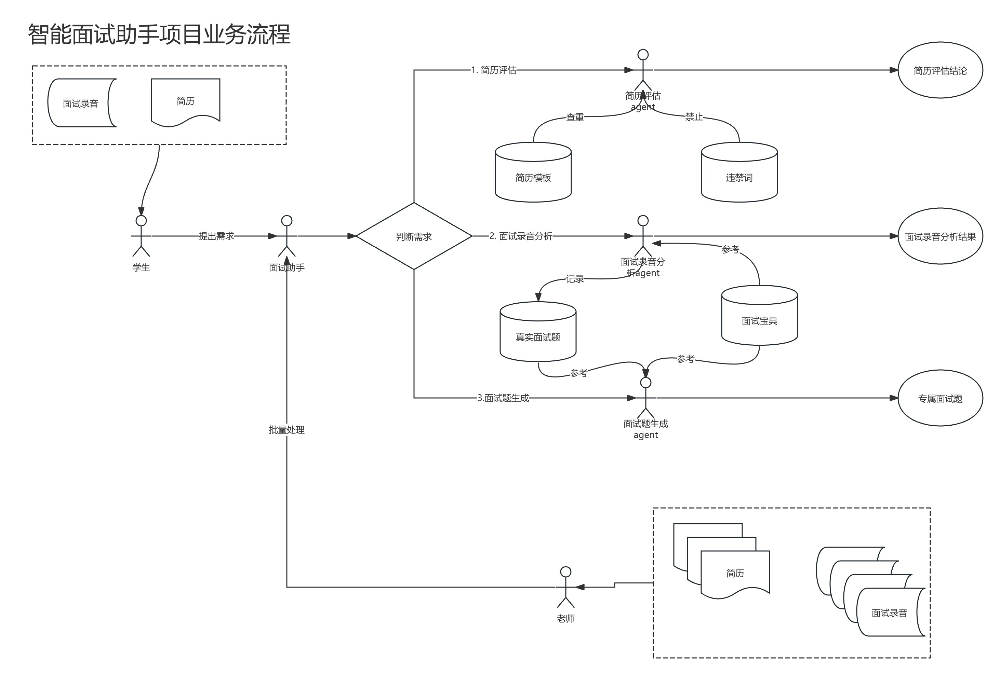
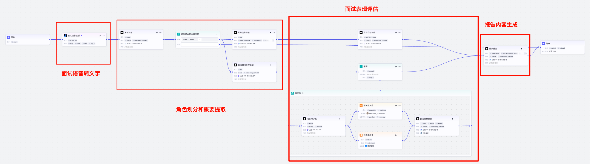

3.1 项目介绍¶
学习目标¶
- 理解AI面试官项目背景和业务流程
- 实现简历修改模块
- 实现面试录音模块
- 实现面试题生成模块
- 实现批处理模块
一、项目背景¶
1 立项背景¶
2025年年初国运级项目deepseek火热，很多企业尝试加入AI赛道，使用AI赋能业务产生价值，市场上涌现了大量的大模型相关就业机会，进而使得许多应聘者期望从事相关岗位。
在这个大背景下，某职业教育机构的人工智能学科学生短期内报名数激增，学生数量增长太快，给教学工作带来了较大的挑战。 基于多年积累的教学资源，在公司人员的共同努力下，学生们的课程学习的需求得以较好的满足。但是在就业的时间节点还是存在效率痛点，其中有一部分可以通过AI得以解决和提效：
-
简历修改问题：在课程后期阶段，学生们基于已经学习过的知识、项目，和简历指导课产出简历后，因同学编写简历的能力各有参差，且编写简历中需要注意的细节过多，初版质量较难把控。
-
面试录音分析问题：为提高学生的就业率，在就业阶段会有老师负责帮助学生分析面试情况。一般一场面试时间在30-60分钟时间，我们取40分钟，如果高峰期一个学生平均有3场面试，那么一个学生的录音就是120分钟，也就是2小时。 如果有3个学生正在面试中，那就是6小时。 如果逐个听，时间成本将会巨大， 如果不听，则会忽略掉一些重要的信息。
-
面试题背题问题：面试宝典中收录了绝大部分的常见面试问题，体量庞大，对于部分学生来讲抓不到重点，全部背下来显然也不现实。在模拟面试或者在实际面试时，总会出现一些简历相关的常见问题回答错误的，这些和面试题没有抓到重点存在关联。 在这个场景下，基于RAG + 大模型技术，结合学生的简历、面试宝典、企业实际的高频面试题，给学生圈出来重点和高频的面试题。
-
模拟面试问题： 虽然在教学的过程中每个阶段都有安排模拟面试，但是对于部分未工作过或者性格内向的同学来讲练习的次数依然不够，在实际面试的时候因为练习不足可能会导致浪费掉一些机会。这里可以结合前面的面试题生成 + 大模型，以及ASR + TTS技术，实现一个语音交互的面试官，达到面试练习的目的。
2 项目规划¶
一般来讲，在公司基于内在的需求转化成项目实现时，往往会基于需求的紧急程度、现有人力、预算等各个因素，对要实现哪些需求，以及实现的质量和效果上做一个取舍。比如：
基于简历修改问题、面试录音分析问题、面试题背题问题、模拟面试问题这4个痛点，结合现有人力投入以及优先级来讲，最终决定按照两期落地该项目。
一期规划：
- 计划投入人力：40人天 , 1~2人（大模型开发工程师）
- 时长：3个月
- 功能集合：
- 简历修改模块
- 面试录音分析问题模块
- 面试题生成模块
批处理模块
落地节奏：
- 立项后2周内，实现MVP(Minimum Viable Product，最小可行产品）)版本，验证可行性：搭建一个最基本的简历
- 立项后2个月时完成所有功能的开发
- 立项后2.5个月时完成所有功能的测试与BUG修复
- 立项后3个月时完成小流量测试
这里或许有同学注意到了，“模拟面试问题” 这个需求没有在一期规划中被接纳，这是因为考虑到实现难度，以及需求的迫切程度，进行的妥协：
- 模拟面试实现困难：模拟面试功能需要实现面试题生成，模拟面试官的语气，以及基于学生回答的问题进行再次提问，判断问题回答是否正确， 把控面试节奏等功能，实现起来比较复杂。
- 已有面试题生成功能：对于绝大部分学生来讲，模拟面试更多的问题是对于知识掌握程度的不足，而不是表达类问题。已有面试题生成的情况下，可以先把大部分同学的痛点解决，其余的我们留到下个版本。
一般来讲，一期的规划都是去开发优先级最高的需求。对于比较大型的项目，往往是研发团队和产品经理共同决定。 但是我们本文中的案例是相当于研发人员解决自己的问题， 这种情况下， 我们自己去决定项目的节奏。
二期规划： 实现前端页面，集成到教学后台。 实现第一期没有实现的模拟面试的功能，实现咨询和分析助手方便老师查询面试情况。具体规划需要等待一期落地后的解决，继续判断。
二、技术设计¶
1 业务流程¶

业务流程如下：
- 简历评估：学生和面试助手对话，上传简历。面试助手判断需求，如果是简历评估需求，则通过简历评估Agent执行简历评估的执行。简历评估除了基于规则判断以外，还会根据简历模板进行查重，以及判断是否包含违禁词。
- 面试录音分析：学生和面试助手对话，上传录音文件。面试助手判断需求，如果是面试录音分析场景，则通过面试录音Agent执行面试录音分析任务。面试录音分析除了基于规则以外， 也会基于面试宝典和互联网上的答案判断回答的结果是否准确，同时记录到真实的面试题题库中。也会返回原始对话文字，让讲师进行判断，对比音频，效率也会更高。
- 面试题生成：学生和面试助手对话，上传简历。面试助手判断需求，如果用户要求生成面试题，这里则会基于用户的面试题，并参考真实面试题、面试宝典，生成对应的面试题。
- 批量处理：老师在线下直接使用命令行操作，批处理学生简历和录音，用于工作提效。
2 技术选型和架构设计¶
2.1 技术选型¶
经调研，我们可以基于以下几套技术栈实现上述功能：
| 技术栈 | 优势 | 劣势 |
|---|---|---|
| Coze SaaS版 | 快速实现需求，低代码 | 限制较多，无法实现比较定制化的功能 |
| Dify或Coze本地版 | 快速实现需求，低代码，能够对接本地模型和服务 | 本地版插件太少，很多功能需要重新造轮子 |
| Langgraph等框架 | 扩展性极强，基本上不受限制，可以对接本地模型，实现自定义复杂逻辑等 | 上手成本太高，开发周期长 |
（Langgraph：代码版的工作流框架，因为可以在代码中调用这种库，对比coze等节点类型固定的框架，拓展性要强的多。并且支持高并发，复杂业务和高流量业务优选）
基于我们可投入的人力，以及项目周期，我们的技术选型结论如下：
- 使用Coze SaaS版实现该功能。如果在线上有一定的规模以后，考虑使用Langgraph框架重构实现，并集成到教学系统。
2.2 架构设计¶
项目的架构如下：

三、模块介绍¶
1 简历修改模块¶
简历评估除了基于规则判断以外，还会根据简历模板进行查重，以及判断是否包含违禁词。 如下图：

2 面试录音分析模块¶
面试录音分析场景，则通过面试录音Agent执行面试录音分析任务。面试录音分析除了基于规则以外， 也会基于面试宝典和互联网上的答案判断回答的结果是否准确，同时记录到真实的面试题题库中。 如下图：

3 面试题生成模块¶
基于用户的面试题，并参考真实面试题、面试宝典，生成对应的面试题。

4 批处理模块¶
用于直接使用命令行操作，批处理学生简历和录音，工作提效使用。
因为是纯python代码，这里就不做展示了。